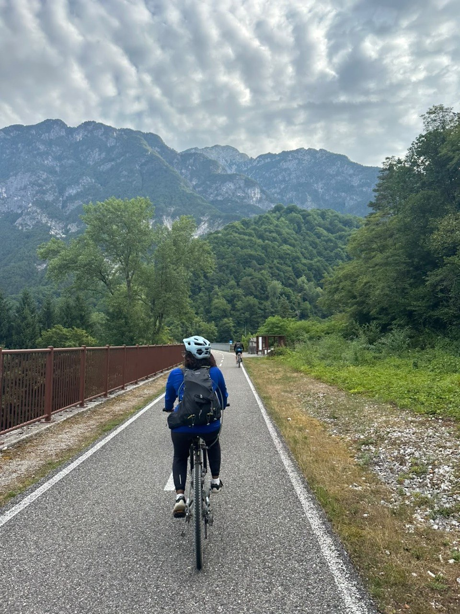

PhD Researcher · SISSA, Trieste
I study how experience shapes behaviour across the lifespan.
I integrate behavioural neuroscience, machine learning, and computational modelling to investigate social behaviour, stress, ageing, and the neural substrates of internal states.
01Behaviour
Quantifying natural behaviour from pose and movement dynamics.
02Computation
Finding structure with statistical models, entropy, and machine learning.
03Neural data
Connecting behavioural organization to neural plasticity and circuitry.
Trajectory
Experience & education
2022—present
PhD Researcher in Neurobiology
International School for Advanced Studies (SISSA), Trieste
Investigating age-dependent effects of social isolation on anxiety-related behaviour, social behaviour, and neural plasticity in zebrafish. Designing computational pipelines for pose estimation, unsupervised behavioural segmentation, factor analysis, transition matrices, and Markov-chain modelling.
Mar—Jun 2022
Visiting Researcher · Cognitive Neuroscience
SISSA, Trieste
Worked on an incidental learning research project under the supervision of Prof. Alessandro Treves.
2019—2022
University Lecturer
Ahfad University for Women, Sudan
2016—2018
MSc in Genetics and Molecular Biology
University of Khartoum, Sudan
2008—2013
BSc in Zoology
University of Khartoum, Sudan
Selected work
Publications & manuscripts
2026
Age-Dependent Effects of Social Isolation on Anxiety, Social Behavior, and Neural Substrates in Zebrafish
Safaa Mamoun et al. — manuscript in preparation
2023
Safaa Mamoun Abdelmageid et al. — Pain Research and Management
2020
Ibrahim-Elkhalil Abdulrazig et al. — bioRxiv preprint
Scientific exchange
Presentations
2026
FENS Forum, Barcelona
Poster — Age-Dependent Effects of Social Isolation on Anxiety, Social Behavior, and Neural Substrates in Zebrafish
2026
INCTN + TEX Meeting, SISSA
Poster — Computational and systems neuroscience
2025
TYAN-SISSA Workshop, Trieste
Oral presentation — Emerging Themes in Neuroscience
2018
Genomics and Human Health in Africa
Oral presentation — Young Scientist Conference
2025Machine Learning and Mathematics for Machine Learning specializations, Coursera
2024Cajal Advanced Computational Neuroscience Summer School, Lisbon
2023Cajal Experimental Neuroscience Bootcamp, SISSA
2018Human Brain and EEG Workshop, Sapien Labs
2017Introduction to Bioinformatics, H3ABioNet
PythonRDeepLabCutKeypoint-MoSeqMachine learningMarkov modelsFactor analysisCalcium imagingImmunofluorescenceConfocal microscopy
Outside research
Beyond the lab

In my free time, I enjoy cycling and hiking. Spending time outdoors
helps me reset and return to my work with a clearer perspective.
Writing
Learning in public
Essay · 10 min read
How I Learned Computational Neuroscience
A biologist’s route into mathematics, programming, machine learning, and models of neural systems — and the resources that made the transition possible.
Read the essay ↗